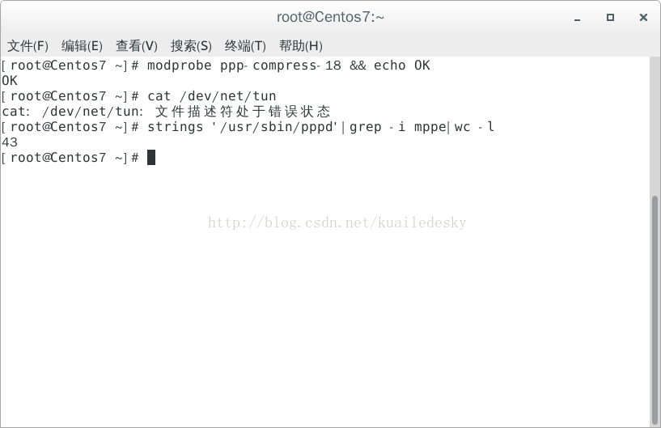

|
Centos 7 安装 pptp vpn
1、检查系统内核是否支持MPPE
显示OK说明系统支持MPPE 2、检查系统是否开启TUN/TAP支持
3、 检查PPP是否支持MPPE
4、安装ppp和iptables #PPTP需要这两个软件包，一般centOS自带
5、安装PPTP
6、配置PPTP
7. 开启系统路由模式
7、配置防火墙NAT转发
##############################################################################################################################
iptables -I INPUT 5 -p tcp -m state --state NEW -m tcp --dport 1723 -j ACCEPTiptables -I INPUT 6 -p tcp -m state --state NEW -m tcp --dport 47 -j ACCEPTiptables -I INPUT 7 -p gre -m state --state NEW -j ACCEPTiptables -I FORWARD 2 -i ppp+ -m state --state NEW,RELATED,ESTABLISHED -j ACCEPT iptables -I FORWARD 3 -m state --state RELATED,ESTABLISHED -j ACCEPT iptables -t nat -A POSTROUTING -s 10.0.6.0/24 -o eth0 -j MASQUERADE
/sbin/iptables -F /sbin/iptables -Z /sbin/iptables -P INPUT ACCEPT /sbin/iptables -A INPUT -m state --state INVALID -j DROP /sbin/iptables -A INPUT -p icmp -j ACCEPT /sbin/iptables -A INPUT -i lo -j ACCEPT /sbin/iptables -A INPUT -p tcp -m state --state NEW,RELATED,ESTABLISHED -m tcp --dport 888 -j ACCEPT /sbin/iptables -A INPUT -p tcp -m state --state NEW,RELATED,ESTABLISHED -m tcp --dport 1723 -j ACCEPT /sbin/iptables -A INPUT -p gre -m state --state NEW,RELATED,ESTABLISHED -j ACCEPT /sbin/iptables -A INPUT -m state --state RELATED,ESTABLISHED -j ACCEPT /sbin/iptables -A INPUT -j REJECT --reject-with icmp-host-prohibited /sbin/iptables -P FORWARD ACCEPT /sbin/iptables -A FORWARD -m state --state INVALID -j DROP /sbin/iptables -A FORWARD -i ppp+ -m state --state NEW,RELATED,ESTABLISHED -j ACCEPT /sbin/iptables -A FORWARD -m state --state RELATED,ESTABLISHED -j ACCEPT /sbin/iptables -A FORWARD -j REJECT --reject-with icmp-host-prohibited /sbin/iptables -P OUTPUT ACCEPT /sbin/iptables -A OUTPUT -m state --state INVALID -j DROP /sbin/iptables -F -t nat /sbin/iptables -Z -t nat /sbin/iptables -t nat -A POSTROUTING -s 10.0.6.0/24 -o seth0 -j MASQUERADE
|
CentOS7下安装 pptp vpn
时间:2014-12-01 02:08来源:linux.it.net.cn 作者:IT
------分隔线----------------------------
- 推荐内容
-
- Iphone/Ipad/Mac OSX IPSEC VPN with Strongs
Introduction This howto describes setting up an IPSEC VPN for use with the Iphon...
- CentOS6.5 一键安装vpn + 添加账号
在日常生活中我们用到vpn的地方很多，比如:脸谱，推特，youtube,最近谷歌也被墙. 对于...
- Iphone/Ipad/Mac OSX IPSEC VPN with Strongs